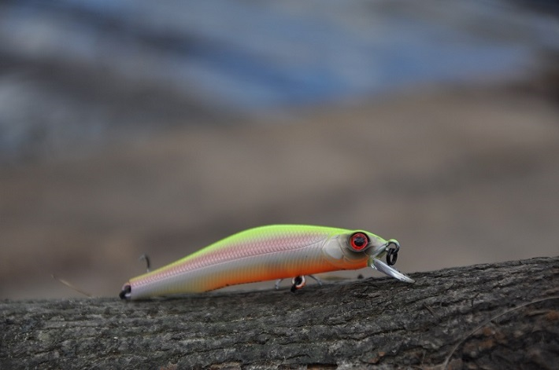

ТОП-5 воблеров для щуки по теплой воде
DUO Tide Minnow 120 Surf
Kosadaka Mirage XS 70F
Megabass Flap Slap 77F
Jackall Squad Minnow 80SP
ZipBaits Orbit 80SP-SR
С началом активного прогревания воды воблера становятся одними из основных приманок для охоты за пятнистыми хищницами на
мелководных участках водоемов. Именно неглубокие заливы и заводи с прибрежной растительностью с наступлением мая
выступают основным полигоном для развертывания щучьих атак на молодь карповых рыб. Ввиду большей прогреваемости
прибрежная зона продуцирует основную питательную массу для белой рыбы - которая, в свою очередь, и привлекает сюда
хищников. Типичные условия весенней рыбалки представляют собою фоновую глубину порядка двух метров с наличием камыша,
кувшинок и хаотично расположенной донной растительности. Эффективная ловля в таких условиях требует от приманки
достаточной проходимости и разнообразной игры, способной побудить хищника покинуть свое укрытие с целью ее атаки.
Построение тактики ловли здесь возможно самое разнообразное, но в подавляющем большинстве случаев основной упор при
охоте за щукой в весенне-летний период будет сводится именно к применению минноу, шэдов и кренков - в данной статье мы
рассмотрим 12 уловистых воблеров на щуку, которые, на наш взгляд, имеют приоритет в описанных условиях с поднимающейся
растительностью. Подчеркну то, что все приманки имеют индивидуальные особенности и их порядок в рейтинге не связан с
уровнем оценки способностей воблера - речь идет об общей эффективности, конкретику же в большей мере будет вносить
водоем со своими нюансами, опыт и предпочтения самого рыболова.
DUO Tide Minnow 120 Surf
Не совсем типичный для весны размер воблера будет особенно уместен на тех водоемах, где у хищника присутствует крупная
кормовая база. Отличные полетные характеристики позволяют данному воблеру достигать удаленных точек ловли, что
незаменимо при поиске щуки на незнакомом рыболову водоеме. При твичинговой анимации воблер DUO Tide Minnow 120 Surf
совершает динамичные движения корпусом, виртуозно разворачиваясь с покачиванием боками. Благодаря специфичной форме тела
воблера и его разнообразной роллинговой игре хищница быстрее обнаруживает приманку на большой водной площади, позволяя
спиннингисту оперативнее находить стоянки щуки на чистой воде, в условиях отсутствия привязки к местам засады щуки.
Стоит отметить и то, что данная модель относится к числу новинок японской компании - это дает дополнительный бонус в
часто посещаемых рыболовами местах, где рыба ежедневно сталкивается со множеством приманок и и обладает большей
осторожностью.
Kosadaka Mirage XS 70F
Известный в широких кругах рыболовов воблер покажет заметную привлекательность для зубастой хищницы в закрытых водоемах,
где главные кормовые объекты щуки зачастую имеют более высокое тело. Данный лайтовый шэд наделен магнитной системой
заброса и обладает достойными полетными характеристиками, благодаря чему спиннингист охватывает большую площадь ловли,
находясь в одной точке. Классические проверенные расцветки воблеров на щуку, возможность самых разнообразных принципов
подачи и весьма лояльная цена делают воблер Косадака Мираж XS 70 весьма видной приманкой в весенне-летней коробке
охотника за щукой.
Megabass Flap Slap 77F

Знаменитый Флеп Слеп от компании Юки Ито имеет много общего с выше упомянутым Миражем. Это близкая форма тела, уровень
заглубления, грамотная линейка расцветок и характер плавучести. Однако приманка Мегабасс обладает особой начинкой -
специальные балансировочные камеры продуцируют несравненную роллинговую игру, которая во многих случаях может послужить
решающим фактором к атаке приманки хищной рыбой. Покачивания тела воблера на фоне его медленного всплытия эффективны в
стоячей воде и на слабом течении - именно таковым условиям и отдает предпочтение хищница в весенне-летний период. Класс
воблера безусловно сказался на его качестве - устойчивая покраска и надежная фурнитура Megabass Flap Slap 77F не
подведут рыболова даже после большого количества выездов на рыбалку.
Jackall Squad Minnow 80SP
Популярный воблер-минноу с массой достоинств и одной характерной особенностью, которую можно отнести к недостаткам -
упористостью при проводке. Действительно, чтобы произвести необходимый "толчок" при твичинге Сквада необходимо весьма
жесткое, как для 10-граммового воблера, спиннинговое удилище. Однако высокая уловистость в условиях мелководий делают
данную модель непременным участником данного обзора. Суспендер, оборудованный шумовой камерой, не имеет системы дальнего
заброса - однако заметным образом на полетные качества отсутствие последней не влияет. Squad Minnow 80SP устойчиво
держит рабочий горизонт проводки и показывает собственную игру при потяжках между рывками, к данной модели применим
самый различный темп твичинга, в этом отношении воблер неприхотлив к опыту рыболова. Выдающейся особенностью минноу от
Джакал является выраженная роллинговая игру на паузах после совершения резвого рывка. Модель применяется как на течении,
так и на стоячих водоемах для ловли щуки различных размеров.
ZipBaits Orbit 80SP-SR

Японский минноу лайт-класса способен послужить ключевой приманкой в различные отрезки сезона - и в весенне-летний период
в частности. Благодаря своей дальнобойности, вариативности анимации и малой упористости Орбит 80 стал неотъемлемой
частью арсенала приманок спиннингиста, так или иначе сталкивающегося с ловлей щуки в прибрежной зоне. Рабочий горизонт
погружения в пределах метра способен оперативно регулироваться рыболовом, в зависимости от конкретной ситуации - это
один из наименее упористых минноу данного рейтинга. Широкая палитра расцветок от японского бренда позволяет подобрать
эффективные варианты для водоемов различного типа в зависимости от состояния воды и основной кормовой базы хищника.
Хаотичные развороты по сторонам с непредсказуемостью движения воблера в равной степени способны соблазнить хищницу как в
реках, так и в водоемах стоячего типа. Активное поведение воблера в свою очередь требует обязательного применения
скрутки в качестве поводка для предотвращения перехлестов.